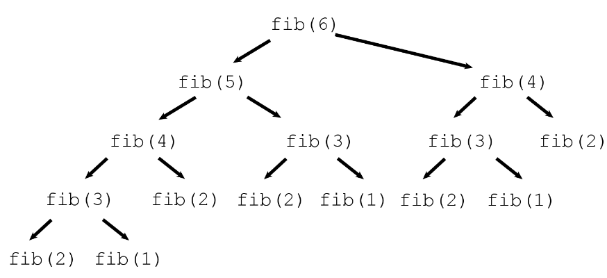

hello <- function(){
cat("hello world\n")
}
hello()hello worldA function in R is an object containing multiple interrelated statements that are run together in a predefined order every time the function is called. Functions in R can be built-in or created by the user (user-defined). The main purpose of creating a user-defined function is to optimize our program, avoid the repetition of the same block of code used for a specific task that is frequently performed in a particular project, prevent us from inevitable and hard-to-debug errors related to copy-paste operations, and make the code more readable. A good practice is creating a function whenever we’re supposed to run a certain set of commands more than twice.
While applying built-in functions facilitates many common tasks, often we need to create our own function to automate the performance of a particular task. To declare a user-defined function in R, we use the keyword function. The syntax is as follows:
function_name <- function(parameters){
function body
}Above, the main components of an R function are: function name, function parameters, and function body.
This is the name of the function object that will be stored in the R environment after the function definition and used for calling that function. It should be concise but clear and meaningful so that the user who reads our code can easily understand what exactly this function does. For example, if we need to create a function for calculating the circumference of a circle with a known radius, we’d better call this function circumference rather than function_1 or circumference_of_a_circle. (Side note: While commonly we use verbs in function names, it’s ok to use just a noun if that noun is very descriptive and unambiguous.)
hello <- function(){
cat("hello world\n")
}
hello()hello worldSometimes, they are called formal arguments. Function parameters are the variables in the function definition placed inside the parentheses and separated with a comma that will be set to actual values (called arguments) each time we call the function. For example:
hello2 <- function(name){
cat("hello", name, "\n")
}
hello2("Class")hello Class circumference <- function(r){
cat(2*pi*r, "\n")
}
circumference(2)12.56637 circumference(10)62.83185 Also, we can set some parameters with default values, such that if we do not pass in an argument, the default value is used.
hello3 <- function(name = 'World'){
cat("hello", name,"\n")
}
hello3()hello World hello3('Class')hello Class The function body is a set of commands inside the curly braces that are run in a predefined order every time we call the function. In other words, in the function body, we place what exactly we need the function to do:
my_std <- function(x){
mu <- mean(x)
n <- length(x)
variance <- sum((x-mu)^2)/(n-1)
return(sqrt(variance))
}
my_std(1:10)[1] 3.02765So far I have been using cat in the function above, I did not use cat, I used a different function: return yet still there was a value printed in the screen. Why is that the case? Well cat Only displays the values on the screen. We are not able to access what is displayed, neither can we reuse the displayed message. On the other hand, return gives back a result to the user. That is to say we can store the value into a variable and reuse it.
When we call an R function, we can pass the arguments by position or by name. Passing by position simply means that the argument occupying a specified position will be treated as the parameter that occupied that position during function definition. On the other hand passing by name means the arguments will be matched to their corresponding names
eg
Surface_Area <- function(h, r){
2*pi*r*(r+h)
}
Surface_Area(10, 7) # position 1:h=10, position 2:r=7[1] 747.6991Surface_Area(h=10, r=7)# passing by name[1] 747.6991Surface_Area(r=7, h=10)# passing by name[1] 747.6991Notice that when passing by name, it does not matter the position of the parameters.
Surface_Area(7, h=10)# Since h has been matched, the remaining unnamed parameters are matched by position.[1] 747.6991Another interesting Idea to note is that R will always return the last evaluated statement in a scope. ie {}
Used only within the context of a function and thus cannot be used outside of a function. Without any specification, R often returns the last evaluated statement within a scope. ie body of statements enclosed within curly braces. So the last value of the function will be returned regardless as to whether return function was used explicitly or not. Thus in the function above, although we did not explicitly use the function return, the last evaluated statement is 2*pi*r*(r+h).
The return function can also be used to short-circuit a function. ie The function will run statements until it meets the return function and everything else afterwards will be ignored. This can be used to quickly solve issues. For example, assume you have a function that only works with positive numbers. If the number is negative, there is no need to continue. Just return NA or any default value.
x_doubled_sqrt <- function(x){
if(x<0) return(NA)
y <- 2*x
sqrt(y)
}
x_doubled_sqrt(-3)[1] NAx_doubled_sqrt(4.5)[1] 3Note that I did not have to use else statement. Though the results will be the same, it is easier to see that the function is short-circuited the moment a number less than 0 is encountered. The statements beneath this return statement are not evaluated.
Fun fact: All the logical operators in all languages are short-circuited. eg, we know that TRUE|…. will return TRUE. Since the first part of the logical | operator has been evaluated to TRUE, there is no need to evaluate the second part of the | operator.Similarly we know that FALSE & … will return FALSE, there is also no need to evaluate the second part of the expression. Thus both | and & are short-circuited.
Here is a fun example of a function that interacts with the user
employee_details <- function(){
cat("Good Morning. Welcome to today's game\n")
name <- readline("What is your name? ")
count <- 0
repeat{
age <- readline("Enter your date and Month of birth: ")
date <- suppressWarnings(lubridate::dmy(paste(age,"-2023")))
if(is.na(date)){
count <- count + 1
switch(sample(letters[1:4],1),
a = cat("crap my bad. I couldn't recognize that date\n"),
b =cat("Are you sure your date is correct?\n"),
c = cat("Seems that we are at an impasse. Can't recognize that\n"),
d = cat("Sorry, try again\n")
)}
else break
if(count>5){
cat("Go back to school and learn what a date is!!\n")
break
}
}
if(count<=5){
zodiac <- as.character(DescTools::Zodiac(date))
a <- sample(c('You will be successful',
'Naah You are a failure',
'Let me tell you a secret- your dad isnt even ...',
'Congratulations! I envy you.',
'You sure you want this?'), 1)
cat("Your zodiac is: ",zodiac,".\n", a,"\n" , sep='')
}
}Try playing with the above, providing both correct and incorrect information :
employee_details()Good Morning. Welcome to today's game
What is your name?
Enter your date and Month of birth:
Are you sure your date is correct?
Enter your date and Month of birth:
Sorry, try again
Enter your date and Month of birth:
Sorry, try again
Enter your date and Month of birth:
Are you sure your date is correct?
Enter your date and Month of birth:
Seems that we are at an impasse. Can't recognize that
Enter your date and Month of birth:
crap my bad. I couldn't recognize that date
Go back to school and learn what a date is!!These are functions that either directly or indirectly call themselves. This technique is called recursion. These functions need to have a way of exiting the recursion which is usually provided by the conditional control flows. These functions are often used whenever there is a Recurrence Relation.
Lets look at the most common examples:
Factorial function: \(n! = n(n-1)!\) where \(0! = 1! = 1\) .
So we can see that this is a function that can be expressed in a recursive manner. The following will be an R code for the function:
my_factorial <- function(n){
if(n == 1) 1
else n * my_factorial(n-1)
}
my_factorial(4)[1] 24But How does this work? Lets include some cat/print to see what happens in the function:
my_factorial <- function(n){
cat("Inside function:\t n =", n,"\n")
if(n == 1) {
res <- 1
cat("Inside the if statement: result: 1\n")
}
else {
res <- n * as.numeric(my_factorial(n-1))
#cat("Inside else statement:\t n =", n, "result:",res,'\n')
}
cat("finish function: \t n =",n,"result:",res,"\n" )
res
}
my_factorial(4)Inside function: n = 4
Inside function: n = 3
Inside function: n = 2
Inside function: n = 1
Inside the if statement: result: 1
finish function: n = 1 result: 1
finish function: n = 2 result: 2
finish function: n = 3 result: 6
finish function: n = 4 result: 24 [1] 24From the printing above, we can see that the function goes all the way until it solves the smallest problem, then unwraps. ie: Notice that the last number to be multiplied is 4 and not 1.
Fibonacci Sequence: \(F_n = F_{n-1} + F_{n-2}\) where \(F_0 = 0\) and \(F_1 = 1\)
Now the R code will be:
fib <- function(x){
if(x == 0) 0
else if (x==1) 1
else fib (x-1) + fib(x-2)
}
fib(6)[1] 8Recursions enable us break down problems easily. It is like induction. If it works for 1 then we just call the function on itself to work for 2 and so on. The question however is, does recursion efficiently solve the problem? For example lets take a look at how fib(6) is computed

This tree illustrates which calls to fibonacci (fib in the image) make recursive calls. Note that fib(4) get called twice, fib(3) three times, fib(2) 5 times, and fib(1) 3 times. That is a lot of wasted effort!
Can we do better? For this particular problem, we can do better. For other problems, we might not be able. Notice that a better recursion invokes memoization ie Tail recursions and or ensuring that there is at most one recursion call per depth. Of course all the recursions can always be turned into one of the loops provided.
At times a function call itself indirectly. In that it calls another function that in turn calls the function in question. The indirect call can be long. Lets just look at a simple example:
is_even <- function(n) {
if (n == 0) TRUE
else is_odd(n - 1)
}
is_odd <- function(n) {
!is_even(n)
}
is_even(20)[1] TRUEis_even(31)[1] FALSEis_odd(31)[1] TRUENotice that in the definition of is_even we call is_odd function, which in turn calls the is_even function. Thus a recursion is created. Of course this is the worst case scenario of testing whether an integer is even. Notice that for the function to return anything, it must go through all the numbers between 0 and n. ie To check whether 5 is even, we call is_odd(4) which in turn calls is_even(4) which in turn calls is_odd(3) ie unwrapping all the way to 0. Then once we get the result of 0 we start wrapping back all the way to 5. Notice that this is way too complicated that simply testing as to whether the remainder of the number when divide by 2 is 0. Its just fun for learning.
With recursion, always start with simple implementation. Break down the problem into a simpler problem of the same kind. In this case you will be able to get the stopping criteria. Before writing the whole recursion, try solving the problem for one case, then two cases. Then you can do the recursion.
Since recursion is a common theme in R, there is a function implemented to call the function to be recursed. ie Recall:
fib3 <- function(n)if(n<2) 1 else n*Recall(n-1)
fib3(5)[1] 120This prevents any printing issues and makes debugging easier. Note that if I want to change the name of the function, I only have to do it one place rather than going in through the function looking for every instance that contains the name of the function and replacing it with the new desired name.
These are functions that are not named. Often used within other functions. Once they have been used, they cannot be reused as they are not stored anywhere in memory. While they need to be short, precise and only contain one executible statement, R allows one to have many executable statements within the anonymous function. In Other languages such as c++ and python, these anonymous functions are referred to as lambda functions. Examples:
(function(x)x^2)(3)[1] 9(\(x)x^2)(5)[1] 25Notice that they are generally used within other functions. ie its impractical to create an anonymous function just to solve a simple statement that can be easily done without the function. As for now, let us just know of their existence. Once we advance to vectors and matrices, we will see the benefit of anonymous functions.
Fibonacci: Write a function named fib2(n) using a loop.
GCD: One of the algorithms use to compute the GCD of two numbers is the Euclidean Algorithm. Write a recursive function named gcd(a,b) that finds the gcd between two numbers a and b using the Euclidean Algorithm.
For example, to compute gcd(48,18), the computation is as follows:
\[ \begin{aligned} \gcd(48,18)\quad &\to \quad \gcd(18,48{\bmod {1}}8)=\gcd(18,12)\\&\to \quad \gcd(12,18{\bmod {1}}2)=\gcd(12,6)\\&\to \quad \gcd(6,12{\bmod {6}})=\gcd(6,0) \end{aligned} \]
This again gives gcd(48, 18) = 6.
LCM: Using the relationship \(\displaystyle \operatorname {lcm(a,b)={\frac {|ab|}{\gcd(a,b)}}}\) . write a function named lcm(a, b)
Taylor Series: Defines a function as an infinite summation expressed in terms of the function’s derivatives at a single point. These are often polynomial in nature:
\[ \begin{aligned} f(x) =& f(a) + f'(a)\frac{(x-a)}{1!} + f''(a)\frac{(x-a)^2}{2!} + f'''(a)\frac{(x-a)^3}{3!} + \cdots\\ =&\sum_{i=0}^\infty f^{(i)}(a)\frac{(x-a)^i}{i!} \end{aligned} \]
This series is used to write basic math functions. Use the first 50 terms to approximate the following functions
a. The exp(x). Name the function my_exp
\[ \begin{aligned} e^x &= 1 + x+\frac{x^2}{2!}+\frac{x^3}{3!} + \frac{x^4}{4!} + \cdots\\ &=\sum_{i=0}^\infty \frac{x^i}{i!} \end{aligned} \]
b. The log(x) . Name the function my_log_restricted. Restrict the domain of the function to be \(0.2\leq x\leq 2\). ie if x is not in the interval, it should output NA
\[ \begin{aligned} \log(x) = &(x-1) -\frac{(x-1)^2}{2} + \frac{(x-1)^3}{3} - \frac{(x-1)^4}{4} + \cdots\\ =&\sum_{i=1}^{\infty} (-1)^{i-1}\frac{(x-1)^i}{i} \end{aligned} \]
c. The sin(x). Name the function my_sin. Note that sine function is defined for all x yet the result will be constrained to \([-1,1]\) . Thus ensure to scale your x to fall within a circle. ie \(x ~(\operatorname{mod} 2\pi)\)
\[ \begin{aligned}\sin (x) & =0+1 x+0 x^2+\frac{-1}{3 !} x^3+0 x^4+\cdots \\ & =x-\frac{x^3}{3 !}+\frac{x^5}{5 !}-\frac{x^7}{7 !}+\cdots\\ &=\sum_{i=1}^{\infty}(-1)^{i-1}\frac{x^{2i-1}}{(2i-1)!}\end{aligned} \]
Significant digits: Given a value 23456 we can represent it as \(2.3456\times 10^4\) where 4 is the number of significant digits with base 10. 4 is obtained by continuously dividing the number by 10 until the number itself is within the interval \([1,10)\) ie \(1\leq x<10\) .Thus the number must be strictly less than 10. For any other base, we divide by that base until the number is within the interval \([1, \operatorname{base})\). Using any of the methods above write a function signif_digits(x, base) that will return the significant digits of a number. eg signif_digits(23456, 10) = 4 and signif_digits(0.00234, 10)=-3
Write a recursive function digit_sum(n) that takes a nonnegative integer and returns the sum of its digits. For example, calling digit_sum(1729) should return \(1+7+2+9\) , which is 19 .
The recursive implementation of digit_sum depends on the fact that it is very easy to break an integer down into two components using division by 10. For example, given the integer 1729 , you can divide it into two pieces as follows:
Each of the resulting integers is strictly smaller than the original and thus represents a simpler case.
The digital root of an integer \(n\) is defined as the result of summing the digits repeatedly until only a single digit remains. For example, the digital root of 1729 can be calculated using the following steps:
Step 1: \(1+7+2+9 \rightarrow 19\)
Step \(2: 1+9 \rightarrow 10\)
Step 3: \(1+0 \quad \rightarrow \quad 1\)
Write a recursive function digital_root(n) that obtains the digital root of an integer n
Logarithms:
my_log_restricted and signif_digits and Given that \(\log(10)=2.302585092994045684017\) write a function named my_log_using10 that computes the natural logarithm of any real number x.my_log_restricted and signif_digits and given that \(\log(2)=0.6931471805599453094172\) write a function named my_log_using2 that computes natural logarithm of any real number xmy_log2 that computes the logarithm to base 2 of any real number xRoot-Finding Algorithm (Newton-Raphson):
The Taylor Series can be used to iteratively approximate the zero of a function. Suppose you are asked to find the value of \(x\) such that \(f(x) = 0\), Then using the first 2 terms of the Taylor series we have:
\[ \begin{aligned} f(x) &\approx f(a) + f'(a)(x-a)\\ x &\approx a + \frac{f(x) - f(a)}{f'(a)}\\ x &\approx a - \frac{ f(a)}{f'(a)}\quad\text{Since} f(x) = 0\\ \end{aligned} \]
Starting from a value \(x_0=a\) one can iteratively approximate what the value x is by using the equation:
\[ x_{n+1} = x_n - \frac{f(x_n)}{f'(x_n)} \]
Example: Suppose I want to solve for \(x^2 - 3=0\) we get the following steps: \(f(x) = x^2 - 3,\quad f'(x) = 2x, \quad \text{Let's take }x_0 = 1\) Then we have
\[ \begin{aligned} x_1 &= 1 - \frac{1^2-3}{2\times1} = 1 - (-2)/2 = 2\\ x_2 &= 2 - 1/4 = 1.75\\ x_3 &= 1.75 - 0.0625/3.5 = 1.732143\\ \end{aligned} \]
Note that after only three iterations we are close to the solution ie \(\sqrt{3}=1.732051\). We should continue until the absolute difference between two successive iterations is less than a chosen tolerance. eg \(\left|x_n -x_{n-1}\right| < 1e-6\) then we stop.
Iteratively solve for \(x\) in the following problems:
\(x^2e^{3x}=10\) Hint: \(f'(x) = 2xe^{3x} +3x^2e^{6x}\)
\(x^3 = -8\) Hint: \(f'(x) = 3x^2\)
Write a function my_sqrt1(x) which obtains the square root of a non-negative real number using newton raphson. Use the function to find the solution to \(\sqrt{13}\)
We could use root finding approach to solve the problem of logarithms. ie to find the zero of a logarithm function. eg \(\log(x) = y\) . Using Newton Raphson algorithm, write a function named my_log_newton that takes one parameter x and outputs the value of \(\log(x)\) .
Hint: Express the problem in exponential notation. ie \(x = e^y\) . Now we are solving for \(y\) such that \(e^y - x=0\). Our function becomes \(f(y) = e^y-x\) and \(f'(y)= e^y\) . Use the previously written function my_exp to solve the problem.
(Continuation from 4 - hard): Write a function named my_optim(x0, f, fprime) that takes in 3 parameters ie \(x_0\): the starting point, \(f\) :the function to be solved and the \(f'\) : the derivative of the function to be solved.
Numerical Differentiation [1] So far, you have noticed that to solve the problems we need to differentiate the functions. But we can simply carry out a numerical differentiation in that we let the computer do the math for us. Using the first order Taylor series approximation, we have:
\[ \begin{aligned} f(x) &\approx f(a) + f'(a)(x-a)\\ f'(x) &\approx \frac{f(x) - f(a)}{x - a}\\ \end{aligned} \]
You have seen this before. ie in the equation of a line \(y=mx+b\) where the gradient/slope \(m\) was computed as
\[ m = \frac{y_2-y_1}{x_2-x_1}=\frac{f(x_2) - f(x_1)}{x_2-x_1} \]
This is defined as the average rate of change between two points \((x_1, f(x_1))\) and \((x_2, f(x_2))\) . What if we want the instantaneous rate of change at \(x_1\) ? We let the difference \(x_2-x_1\) go to 0. If we define \(h = x_2-x_1\) then we have \(x_2 = x_1 + h\) and we can therefore define the instantaneous rate of change at point \(x_1\) as:
\[ f'(x_1) = \lim_{h\to 0} \frac{f(x_1 + h) - f(x_1)}{h} \]
I hope you have seen this severaly given as the definition of derivative at point \(x_1\)
Since in the numerical world, \(h\) can never be truly 0, as we cannot divide by 0, we let \(h=1e-8\) and approximate \(f'(x)\)
Example: Find the derivative of \(2x^3-6x+3\) at $x=2$. Analytically the derivative is \(f'(x) = 6x^2-6\) and thus \(f'(2)=6(2^2)-6 = 18\) Numerically we would do
x <- 2
f <- function(x)2*x^3 - 6*x + 3
h <- 1e-8
(f(x+h) - f(x))/h[1] 18With the information above:
Write a function my_derive(fun, x) that evaluates the derivative of function fun at x.
Write a function my_optim2(f) that uses my_derive to find the zero of f. Define \(x_0=1\)
MUST DO PROJECT
Better Fibonacci Sequence- Tail Recursion Click on the bolded link, Starting at page 185-187, read through to understand what a better implementation of Fibonacci should look like. Write an R code to implement the same. Hint: The function should take 3 parameters
Tower of Hanoi - Click on the link, Starting at page 202-211, read the problem regarding tower of Hanoi. Try writing the code in R to solve the problem. The code should not be more than 7 lines of code. Hint the function should have 3 parameters.